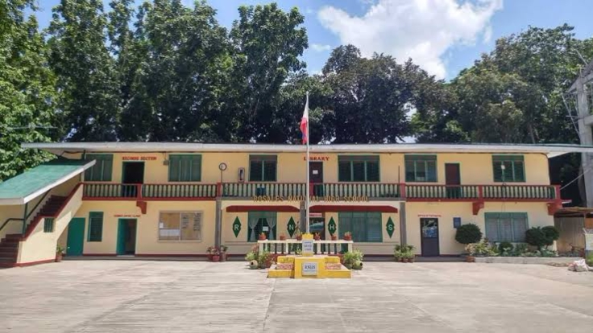

THE CREATION OF ROSALES NATIONAL HIGH SCHOOL
The Rosales National High School which caters to secondary school youths of Rosales and its neighboring towns, Rosales National High School was founded in 1945 through the initiative of public school officials and prominent and civic- spirited of the town, namely: the late Mayor Felix Coloma, Dona Petra Callanta, Don Francisco delos Reyes. Don Isidro Casanova, Don Conrado Estrella Sr. In September 1945, the school then known as Rosales Junior High School has under each educa tional wing the first year students in 1941 that were overtaken by the out break of the Pacific war in World War II on December 8, 1941. The fresh men and sophomore classes were housed temporarily in the Plaridel Col lege Building.
From Plaridel College. the school was transferred to another site which is currently occupied by the Rosales North Central School where Quonset Buildings vacated by the American Soldiers were then used as classrooms.
While classes were going on, the founding fathers and the PTA ne gotiated for the purchased of a permanent site, meticulously chosen be cause of its healthful environment that is conducive to learning, more foot age to futuristic expansion and its ideal location in terms of proximity to the main thoroughfares of the town.
Assured of the funds, the PTA Board of Directors negotiated with the heirs of the late Mr. Alejandro Pablo regarding the contemplated purchase of his lot situated in the Poblacion of Rosales.
The new site has an area of 72, 634 square meterS under title 22452 registered on February 9, 1957 under TCT No. 1029. It cost the PTA Php 50,843.20 as down payment to acquire the cogonal land.
In S.Y 1946-1947, the PTA was determined to transfer the school to the chosen site. For donations of parents and civic spirited citizens, shacks were constructed and were furnished by the facilities of the Plaridel College donated by Dona Teodora Serafica and family. In this school site were enrolled 51 fourth year students and 200 first year students. The first class of 32 males and 16 females were graduated.
As time goes by, there are so many changes happened in the school in terms of the buildings, curricula, number of teachers and number of stu dents.Currently, the total number of enrollees in school is about 5,151 as of march 4, 2018. In that case the Rosales NHS is one of the biggest Na tional High School in the Division of Pangasinan II.
In terms of acquisition of learning, before it is only a matter of learning, just giving the ideas to the learners in order for them to internal ized on what is going on and on what will be in the next generation but to day, it is not just a ingesting of ideas but it is more one practical matter, the of learning today is more on hands-on-minds-on process it focusses on out come based wherein in all things that they have learned must put into action.
